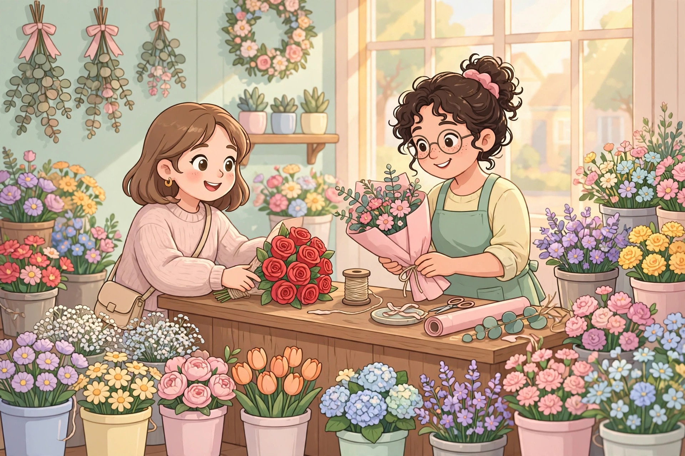

提示：如果頁面變成純文字、沒有圖片和播放按鈕，說明 Safari 閱讀器模式開了，點地址欄的書本圖標退出閱讀器，即可恢復彩色頁面。
去花店買花
안녕하세요.
去花店買花，問花的種類、問價錢，請店員包裝，用卡結帳。

안녕하세요.
꽃을 사고 싶어요.
이 꽃은 무슨 꽃이에요?
장미예요.
정말 예뻐요.
오늘은 친구 생일이에요.
그래서 꽃을 사요.
장미는 한 송이에 얼마예요?
오천 원이에요.
빨간색 장미를 주세요.
다섯 송이 주세요.
포장해 주세요.
카드로 계산할게요.
감사합니다.
還沒播放，點上面的大按鈕開始。
慢速女聲朗讀，先聽一遍，再一句一句跟讀。如果大按鈕點了還是沒聲音，請點直接打開音頻，或點下面的備用朗讀。
逐句翻譯
- 你好。
- 我想買花。
- 這是什麼花？
- 是玫瑰。
- 真的很漂亮。
- 今天是我朋友的生日。
- 所以我要買花。
- 玫瑰一朵多少錢？
- 五千韓元。
- 請給我紅色的玫瑰。
- 請給我五朵。
- 請幫我包裝。
- 我用卡結帳。
- 謝謝。
文法講解
1. -은/는（主題助詞）
是什麼：名詞 + -은/는，表示這句話在說誰、說什麼，「……呢、就……來說」的意思。句型結構：名詞 + -은/는 + 述語（名詞以子音結尾用 -은，母音結尾用 -는）。短文例句：이 꽃은 무슨 꽃이에요?（這是什麼花？）再舉一例：저는 학생이에요.（我是學生。）容易錯的地方：-은/는 是提示主題，不是主格助詞 -이/가；장미 以母音 미 結尾，所以用 -는，說「장미은」是錯的。
2. -아/어 주세요（請幫我……）
是什麼：動詞詞幹 + -아/어 주세요，是很有禮貌的請求，「請幫我……」的意思。句型結構：動詞詞幹 + -아/어 주세요（詞幹最後母音是 ㅏ 或 ㅗ 時用 -아，其他用 -어）。短文例句：포장해 주세요.（請幫我包裝。）再舉一例：물을 주세요.（請給我水。）容易錯的地方：주세요 前面要接動詞詞幹，不能直接接名詞；포장하다 的詞幹是 포장하-，所以是 포장해 주세요，不是「포장 주세요」。
3. -이에요/예요（是……）
是什麼：名詞 + -이에요/예요，表示「是……」，是初級最常用的句型之一。句型結構：名詞 + -이에요/예요（名詞以子音結尾用 -이에요，母音結尾用 -예요）。短文例句：장미예요.（是玫瑰。）再舉一例：저는 선생님이에요.（我是老師。）容易錯的地方：장미 以母音 미 結尾，所以用 -예요，說「장미이에요」是錯的；오천 원 以 ㄴ 結尾，是子音結尾，所以是 오천 원이에요。
常用詞彙
- 꽃 花（kkot）—— 꽃을 사고 싶어요.（我想買花。）
- 장미 玫瑰（jang-mi）—— 장미예요.（是玫瑰。）
- 송이 朵（花的量詞）（song-i）—— 다섯 송이 주세요.（請給我五朵。）
- 빨간색 紅色（ppal-gan-saek）—— 빨간색 장미를 주세요.（請給我紅色的玫瑰。）
- 생일 生日（saeng-il）—— 오늘은 친구 생일이에요.（今天是我朋友的生日。）
- 예쁘다 漂亮（ye-ppeu-da）—— 정말 예뻐요.（真的很漂亮。）
- 포장하다 包裝（po-jang-ha-da）—— 포장해 주세요.（請幫我包裝。）
- 친구 朋友（chin-gu）—— 오늘은 친구 생일이에요.（今天是我朋友的生日。）
跟讀小提示
一句一句慢慢讀，問句「이 꽃은 무슨 꽃이에요?」「장미는 한 송이에 얼마예요?」句尾要輕輕揚起來；「포장해 주세요」裡的「포장」要讀得清楚一點，重音放在第一個音節。
留給你的問題
오늘 누구에게 꽃을 주고 싶어요? 😊
（今天想送花給誰呢？）